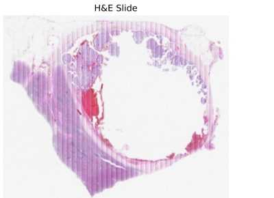
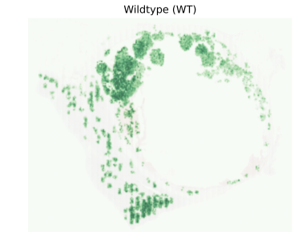
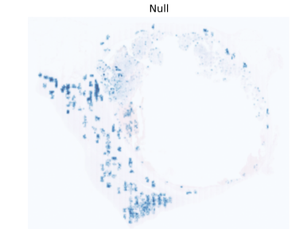
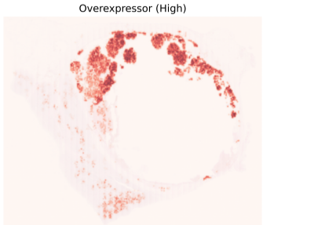

Wild-type, null and overexpression staining as a surrogate for TP53 mutation status in tumor pathology.
Learning objectives
Understand the three-pattern p53 framework: wild-type, null and overexpression
Recognise how each pattern maps to the underlying mutation type
See how the three control lines on a TriControl slide give a reference for each pattern
Section 01
What is p53?
p53 is a protein often called the guardian of the genome. Its job is to protect the integrity of a cell's DNA. It is made from a gene called TP53 and classed as a tumor suppressor, because its normal function is to stop tumors from forming.
Mechanically, p53 is a transcription factor: it turns other genes on or off in response to cellular stress, DNA damage or signals for apoptosis. Think of it as the genome's quality-control inspector. When DNA is damaged, p53 assesses the damage and either pauses the cell so repairs can be made or triggers the cell to self-destruct rather than risk becoming cancerous.
TP53 is the most frequently mutated gene across human tumors. A rare heritable condition, Li-Fraumeni syndrome, develops when a person inherits only one working copy of the gene, predisposing them to tumors in several tissues in early adulthood.
Section 02
How IHC shows p53
IHC uses antibodies to detect a specific protein, or antigen, in a tissue sample. In the same way the immune system makes antibodies to find harmful substances, IHC borrows that antigen-finding ability to detect a protein for diagnosis.
An antibody that binds only to p53 is applied to the section, followed by a chemical reaction that makes the binding visible under the microscope. IHC keeps the surrounding tissue architecture intact and shows exactly where the protein sits, including whether it appears as nuclear expression. That is what makes it so valuable to pathologists.

H&E reference: the baseline against which the IHC patterns are interpreted.Section 03
The three patterns
p53 is one of the most studied biomarkers in pathology, and its staining is read with a three-pattern classification that closely tracks the mutation status of the gene. Because p53 is mutated in so many cancers, the pattern has become a practical alternative to genetic testing. The three patterns are wild-type, null and overexpression (also called diffuse).
Wild-type (normal). Low, variable intensity, typically in fewer than half of the tumor cells. This is the pattern expected when TP53 is not mutated and the protein is doing its normal job.
Null. A complete absence of nuclear p53 staining while the internal positive control is stained. This usually points to a truncating mutation, one that stops the cell from making any functional protein.
Overexpression (diffuse). Strong, uniform staining in at least 80 % of tumor cells. This also signals a mutation, but a different kind: certain mutations produce a dysfunctional p53 that accumulates in the nucleus instead of being cleared.

Wild-type · fewer than half the cells stainedLook for scattered, low-intensity staining that varies from cell to cell.

Null · no nuclear stainingLook for unstained tumor nuclei next to a stained internal control.

Overexpression · 80 % or more, strongLook for strong, uniform staining in nearly every tumor nucleus.
Schematic cell fields. The colours mark the classification category, not the real stain colour.
TriControl covers all three. PCI's TriControl p53 panel carries a null, a wild-type and an overexpression cell line on the same glass as the patient's tissue, a physical reference for each pattern above. The software grades every tumor nucleus against those three lines. View TriControl →
Section 04
Clinical relevance
Pathologists treat an abnormal p53 pattern as a reliable surrogate marker for an underlying TP53 mutation. In endometrial cancer, p53 status is part of the WHO-endorsed molecular classification.
In that classification, p53-abnormal tumors are the subgroup with the poorest prognosis and the greatest likelihood of benefiting from additional treatment.
Sources: NCBI Bookshelf: Genes and Disease · PMC: Tumor Suppressor p53: Biology, Signaling Pathways, and Therapeutic Targeting · PMC: Targeting p53 Pathways · Cleveland Clinic: Immunohistochemistry · Thermo Fisher Scientific: Immunohistochemistry (IHC) · Abcam: IHC Staining Techniques · Virchows Archiv (2024): Pattern-Based p53 IHC Interpretation in Colorectal Cancer · PMC (2024): p53 Expression Patterns in Breast Carcinoma · Modern Pathology (2022): p53 IHC in Endometrial Cancer (PORTEC-3) · Performance of Pattern-Based p53 IHC in Vulvar Squamous Cell Carcinoma.
Next: mismatch repair proteins.
Four proteins, read as intact or lost, and what the pairing tells you.